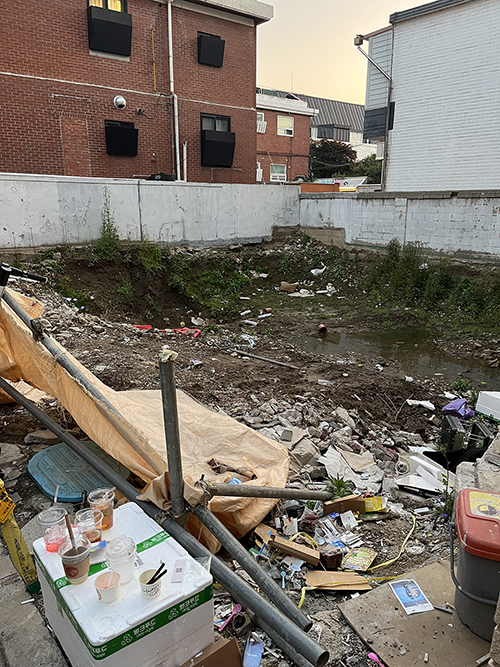

2023.6.
Furnitures without any uses were put on the street to be thrown away. The way not to be recycled with white plaster translates them into an artwork to be shown.
Those were lain ahead of us as the furnitures without any functions were fragile. But, they would feel inconvenience as they pass through the sofa not to sit. Staring vacuously makes them to be aware of space in different ways. It changes function of the space, and their views are frozen for a while. Completely, it turns into a new place after it forgets its originality.

The grounds dug for construction.
Nothing would not be anticipated. There was no signboard. People were just throwing the trashes toward the site while they walked through.
writingsaboutbuildings
Copyright 2023. Dongjoo Lee. All rights reserved.